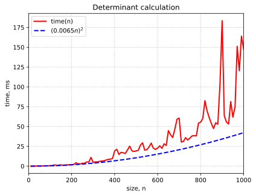

Determinants#
Determinant is a function on square matrices: \(\det \colon \mathbb R^{n\times n} \to \mathbb R\). Determinant of a matrix \(\boldsymbol A\) is denoted \(\det \boldsymbol A\) or \(\vert\boldsymbol A\vert\).
Explicit formulas#
Determinant of a \(2\times 2\) matrix:
Determinant of a \(3\times 3\) matrix:
General definition#
Определитель, или детерминант, представляет собой важную числовую характеристику квадратной матрицы. Определителем матрицы называется полилинейная кососимметричная функция от строк матрицы. Точнее говоря, определитель — это функция \(\det \colon \mathbb R^{n\times n} \to \mathbb R\), удовлетворяющая трём аксиомам:
(кососимметричность) \(\det \boldsymbol B = -\det \boldsymbol A\), если матрица \(\boldsymbol B\) получена перестановкой каких-либо двух строк матрицы \(\boldsymbol A\);
(полилинейность) определитель линеен по каждой строке:
если матрица \(\boldsymbol B\) получена из матрицы \(\boldsymbol A\) умножением некоторой её строки на число \(\lambda\), то \(\det \boldsymbol B = \lambda \det \boldsymbol A\);
если \(i\)-я строка матрицы \(\boldsymbol A\) равна сумме \(i\)-ых строк матриц \(\boldsymbol B\) и \(\boldsymbol C\), а все остальные строки этих матриц совпадают, то \(\det \boldsymbol A = \det \boldsymbol B + \det \boldsymbol C\).
(нормировка) \(\det \boldsymbol I = 1\).
Можно показать, что существует только одна функция, удовлетворяющая этим трём свойствам.
Properties of determinants#
Из аксиом 1-3 напрямую выводятся следующие свойства определителя:
\(\det \boldsymbol A = 0\), если матрица \(\boldsymbol A\) содержит нулевую строку или две пропорциональные строки;
определитель не меняется при основном элементарном преобразовании вида
\[ \boldsymbol a_i^\mathsf{T} := \boldsymbol a_i^\mathsf{T} - \lambda \boldsymbol a_j^\mathsf{T}; \]\(\det (\lambda\boldsymbol A) = \lambda^n \det \boldsymbol A\);
определитель диагональной матрицы равен произведению диагональных элементов
определитель треугольной матрицы равен произведению диагональных элементов
\(\det \boldsymbol A = 0\) тогда и только тогда, когда матрица \(\boldsymbol A\) вырождена
\(\vert\boldsymbol{AB}\vert = \vert\boldsymbol{A}\vert \cdot \vert\boldsymbol{B}\vert\)
\(\det \boldsymbol A^\mathsf{T} = \det \boldsymbol A\)
Инвариантность определителя относительно транспонирования означает, что во всех перечисленных выше свойствах детерминантов можно заменить «строки» на «столбцы», и утверждения останутся верными.
Из формулы для определителя произведения матриц вытекает, что детерминант обратной матрицы равен \(\det \boldsymbol A^{-1} = \frac 1{\det \boldsymbol A}\).
Big Formula#
Иногда детерминант матрицы
определяют по явной формуле
где \(S_n\) — множество перестановок множества \(\{1, 2, \ldots, n\}\), \((-1)^\sigma = +1\), если перестановка чётная и \(-1\) в противном случае.
Упражнение. Проверьте, что определение детерминанта по формуле (53) согласуется с приведёнными выше аксиомами 1-3.
Proof
Линейность по строкам вытекает из самого вида формулы (53), ведь элемент каждой строки входит в каждое слагаемое ровно один раз.
Если \(\boldsymbol A = \boldsymbol I\), то единственное ненулевое слагаемое в сумме (53) соответствует тождественной перестановке \(\sigma\), поэтому вся сумма равна \(1\).
Наконец, разберёмся с перестановкой строк. Формула (53) для матрицы, полученной обменом \(i\)-й и \(j\)-й строки матрицы \(\boldsymbol A\), примет вид
В каждом слагаемом перестановка \(\sigma\) отличается от перестановки в исходной формуле (53) лишь одной транспозицией. Добавление одной транспозиции меняет знак перестановки, поэтому знак каждого слагаемого должен измениться, и, следовательно, меняется знак всего определителя.
Формула (53) содержит \(n!\) слагаемых, что делает её бесполезной для практики при хоть сколько-нибудь больших значениях \(n\). Однако при малых \(n\) она довольно удобна.
Cofactor formula#
Определитель матрицы размера \(3\times 3\) можно переписать как
или же как
Получилась сумма произведений элементов первой строки на дополнительные миноры — определители подматриц исходной матрицы, полученные вычёркиванием первой строки и столбца, в котором находится умножаемый на минор элемент. Заметим также, что второе слагаемое взято со знаком «минус». Такой способ подсчёта детерминанта называется разложением по строке. В общем случае справедливо равенство
где \(M_{ij}\) — дополнительный минор, полученный вычёркиванием \(i\)-й строки и \(j\)-го столбца. Аналогичная формула справедлива и для разложения по столбцу.
Proof of the cofactor formula
Заметим, то минор \(M_{ij}\) не зависит от \(i\)-й строки матрицы \(\boldsymbol A\) и линеен по всем остальным строкам (это же определитель). Следовательно, выражение \((-1)^{i+j}a_{ij} M_{ij}\) линейно по каждой строке матрицы \(\boldsymbol A\), равно как и их сумма.
Если \(\boldsymbol A = \boldsymbol I_n\), то
На десерт у нас снова обмен строк. Если \(i\)-я строка не участвует в обмене, то знак каждого слагаемого в правой части (54) меняется за счёт изменения знака минора \(M_{ij}\). Пусть теперь \(i\)-я строка обменялась с \(k\)-й, \(i < k\). Тогда правая часть (54) превращается в
где минор \(\widehat M_{ij}\) отличается от минора \(M_{ij}\) тем, что на месте \(k\)-й строки у него находится \(i\)-я. Переставляя соседние строки \(k-i - 1\) раз, превратим минор \(\widehat M_{ij}\) в \(M_{kj}\), не забыв умножить на \((-1)^{k-i-1}\) за счёт смены знака при каждой перестановке. В итоге получаем, что
то есть знак действительно поменялся в результате обмена строк.
Особенно удобно разлагать определитель по таким строкам/столбцам, которые содержат много нулей, поскольку число слагаемых в таком разложении равно количеству ненулевых элементов.
Пример. Вычислим определитель трёхдиагональной матрицы \(\boldsymbol A_n\)
Имеем \(D_1 = 2\), \(D_2 = 4 -1 = 3\). Похоже, что \(D_n = n+1\). Чтобы это доказать, выведем рекуррентную формулу для \(D_n\), разложив его по первой строке:
По индукции отсюда получаем, что \(D_n = 2n - (n-1) = n+1\).
Determinants in python#
To calculate a determinant, use np.linalg.det:
import numpy as np
from scipy.linalg import hilbert
A = hilbert(2)
A
array([[1. , 0.5 ],
[0.5 , 0.33333333]])
np.linalg.det(A)
0.08333333333333333
What about complextity of calcualting determinants?
Question
Is it true that it takes \(O(n^2)\) arithmetical operations to calculate \(\det \boldsymbol A\) if \(\boldsymbol A \in \mathbb R^{n\times n}\)?
Answer
If we look further for larger values of \(n\), we’ll see that asymptotics \(O(n^2)\) is incorrect:
A practical way to calculate \(\det \boldsymbol A\) is to use Gaussian elimination to reduce \(\boldsymbol A\) to echelon form \(\boldsymbol U\) which is an upper triangular matrix. Then
This takes \(O(n^3)\) arithmetic operations in total.
Exercises#
Let \(\boldsymbol A \in \mathbb R^{n\times n}\) and \(\det \boldsymbol A = 2\). Find \(\det(2\boldsymbol A)\), \(\det(-\boldsymbol A)\), \(\det \boldsymbol A^3\), \(\det\boldsymbol A^{-1}\).
Let \(D_n\) be the \(n\times n\) determinant
\[\begin{split} \begin{vmatrix} 1 & -1 & 0 & 0 & \dots & 0 & 0 \\ 1 & 1 & -1 & 0 & \dots & 0 & 0 \\ 0 & 1 & 1 & -1 &\dots & 0 & 0 \\ \vdots & \vdots & \ddots & \ddots & \ddots & \vdots & \vdots \\ 0 & 0 & \dots & 1 & 1 & -1 & 0 \\ 0 & 0 & \dots & 0 & 1 & 1 & -1 \\ 0 & 0 & \dots & 0 & 0 & 1 & 1 \\ \end{vmatrix}. \end{split}\]Show that \(D_n = F_{n + 1}\) where \(F_n\) is the Fibonacci sequence.
What are the possible values of \(\det \boldsymbol P\) if \(\boldsymbol P\) is a permutation matrix? projection matrix?
Prove that \(\det \boldsymbol A = 0\) if \(\boldsymbol A\) is a skew-symmetric matrix of odd shape.
Prove that \(\vert\det \boldsymbol Q\vert = 1\) if \(\boldsymbol Q\) is an orthogonal matrix.
Matrices \(\boldsymbol A\) and \(\boldsymbol B\) are similar (\(\boldsymbol A \sim \boldsymbol B\)) if there exists a nonsingular matrix \(\boldsymbol M\) such that \(\boldsymbol B = \boldsymbol M^{-1} \boldsymbol {AM}\). Prove that \(\det \boldsymbol A = \det \boldsymbol B\) if \(\boldsymbol A \sim \boldsymbol B\).
Establish the formula for the Vandermonde determinant.